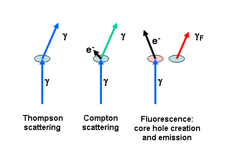

Grazing-Incidence X-ray Fluorescence:
Achieving Monolayer Sensitivity
Detlef Smilgies
I. Grazing Incidence
The first step to achieve surface
sensitivity is always to go to grazing incidence scattering geometry:
- At the critical angle x-ray beams
are confined to a penetration depth of about 100 Å, i..e
atoms deep in the bulk are not exited by the incident wave. This
results in a better signal-to-noise ratio.
- Furthermore, the electric field at
the is enhanced at the critical angle by a factor of up to 4, due to
the fact that incident and reflected wave fields are in phase. This
gives rise to an according signal enhancement.
Please refer to this link for detailed information.
II. Grazing Exit
By choosing grazing exit geometry the escape depth of x-rays from the
bulk is reduced - this is essentially the time-reversed argument from
part I.
III. 90° Scattering
Geometry
By placing the detector in the direction of the
polarization vector of the incident beam, dipole scattering is strongly
reduced. This way both elastic diffuse scattering (Thompson scattering
from defects) and inelastic diffuse scattering (Compton scattering) are
minimized, again enhancing the signal-to-noise ratio. For an x-ray
fluorescence event, the memory of the incident beam polarization is
lost, and fluorescent radiation is unpolarized.

IV. Conclusion: Optimum Scattering Geometry
By orienting the sample horizontally and the fluorescent detector in
the horizontal plane, all three conditions I - III can be fulfilled
simultaneously. This scattering geometry can be achieved on a vertical
four-circle diffractometer with an additional fixed arm to support the
energy-dispersive detector. This way, the usual point detector can be
used for taking the reflectivity curve while the fluorescence signal is
recorded simultaneously. Another advantage of this geometry is, that
this way the surface is well adapted to the incident beam profile with
its narrow vertical width, whereas the full horizontal beam can be used.
V. Signatures of
Surface and Bulk Scattering
If the fluorescing atoms are located on the surface, the fluorescent
yield as a function of grazing angle should look like a Vineyard
function with the characteristic enhancement at the critical angle.
If the fluorescing atoms are located in the bulk (bulk impurities) the
fluorescence yield follows the penetration depth
curve. Because
of total external reflection, the penetration depths changes rapidly
while scanning through the critical angle and results in a distinct
angle dependence. If we make the simplifying assumption that we have a
constant density
of scatterers r within a layer of thickness L, then we get a simple expression for the scattering
intensity.
If there is a doping profile of impurities in the surface-near region
or if we have a well-defined thin film,
analysis is more involved, because interference effects within the wave
fields have to be accounted for in a quantitative analysis [see: de
Boer, PRB
44, 498 (1991)]. Again, angular scans through the critical
angle are combined with fluorescence measurements. This technique to
determine impurity or doping
profiles has been termed Total Reflection X-ray Fluorescence (TRXRF)
and is of importance for semiconductor industry.
VI. Detector
Choices
For incident beam energies below the Ge K-edge (11.1 keV) a Ge detector
is a good choice. Above this energy, a Si-Li detector is more suitable
detector, avoiding the Ge escape peak. A Ge detector has the highest
sensitivity due to its high stopping power. Both Ge and Si-Li detectors
have a relatively large active area, and apertures can be adjusted to
obtain good signal levels and good signal-to-noise.
Both Ge and Si-Li detectors have a rather limited maximum count rate of
about 10,000 counts per second, before they reach saturation. For more
intense scattering target, e.g. deposition of multiple monolayers, a
PIN-diode based detector or a Si drift diode based detector may be a
better choice. These detector have a small active area, but allow
higher count rates (up to 300,000 counts per second for a Si drift
diode).
All of the mentioned detectors feature an energy resolution of 150 to
250 eV. Using a multi-channel analyzer, fluorescence events over a
large energy range can be recorded simultaneously. This energy range is
limited by the incident beam energy (atoms need to be excited) and on
the low-energy side by the transmission of windows and flight paths
(the low-energy cutoff is typically at about 3 keV, unless special
measures are taken).
For higher resolution requirements, a crystal analyzer would be needed.
There are high-efficiency focussing analyzer designs with a resolution
of a few 10 eV. A crystal analyzer can also collect a range of energies
when combined with a linear detector.